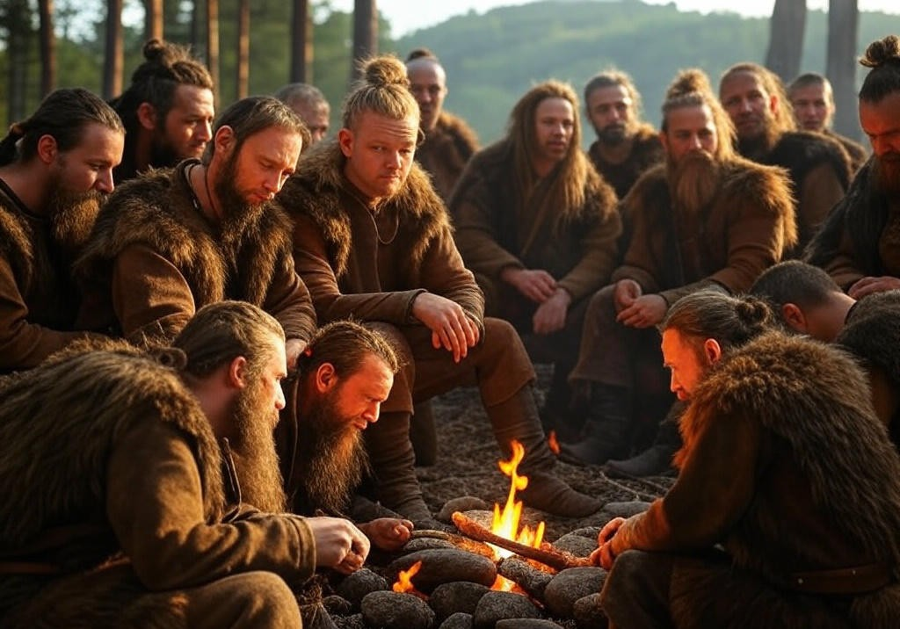
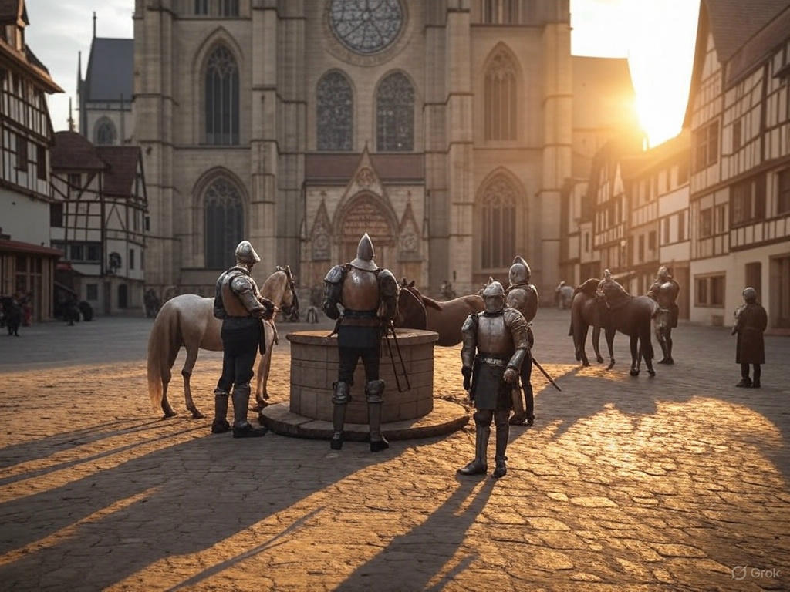
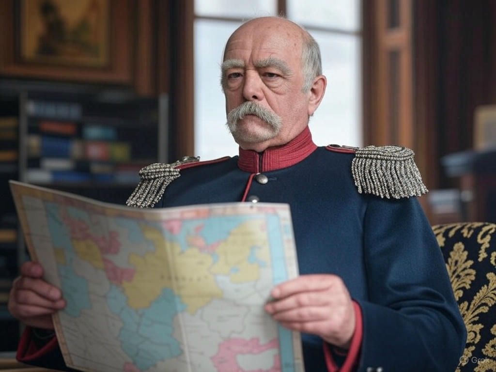
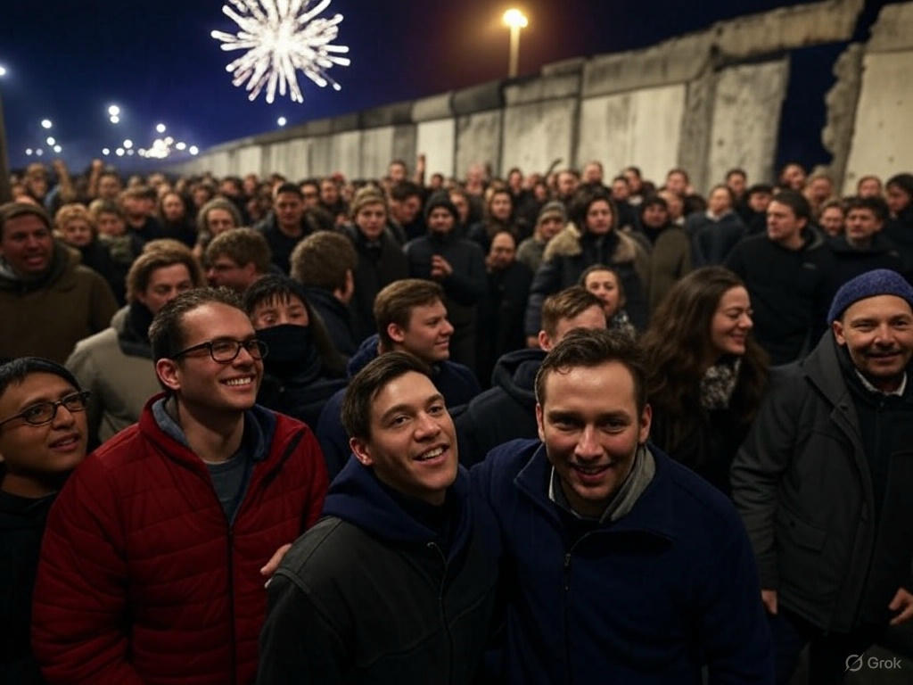
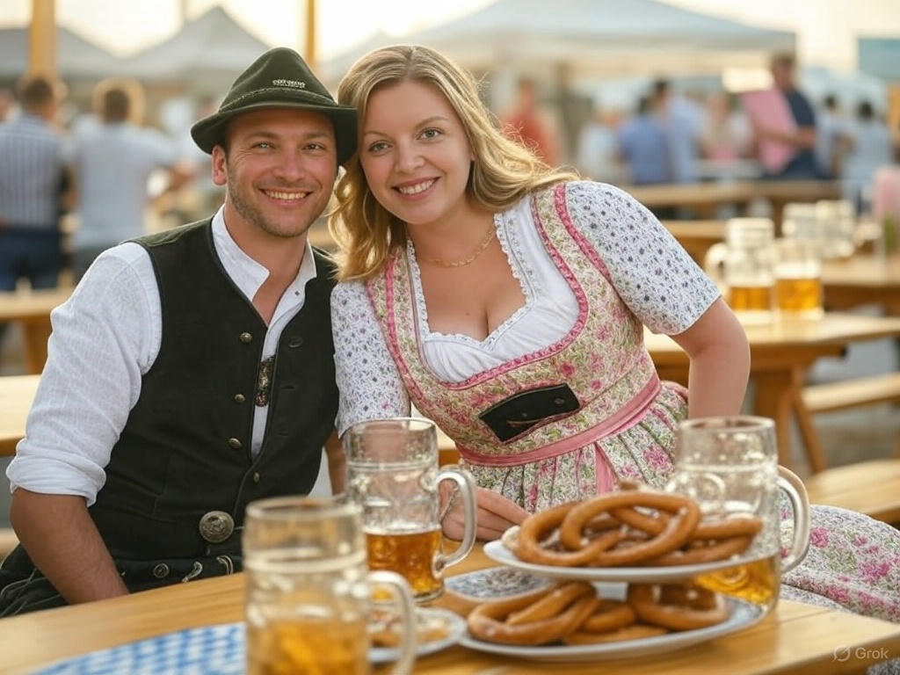
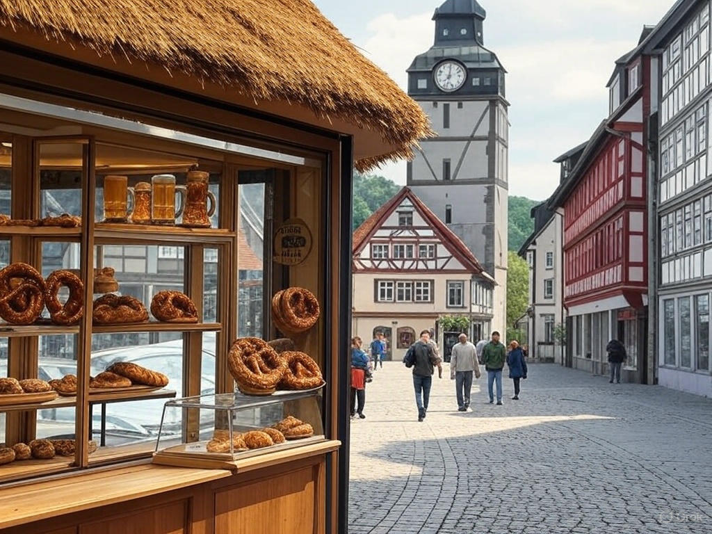
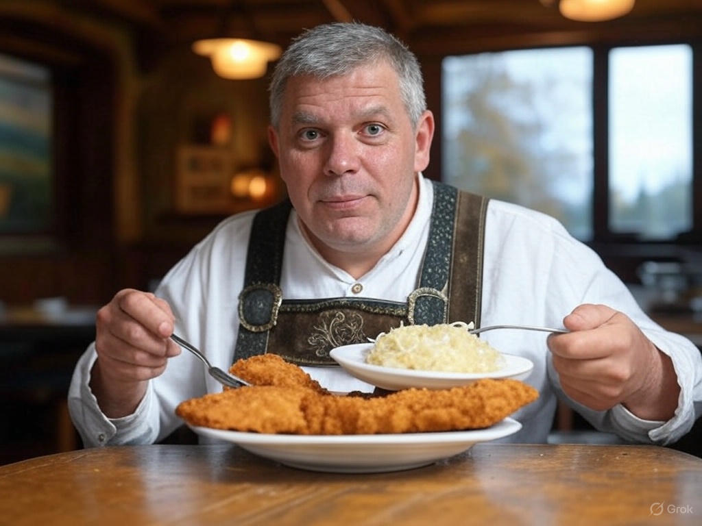
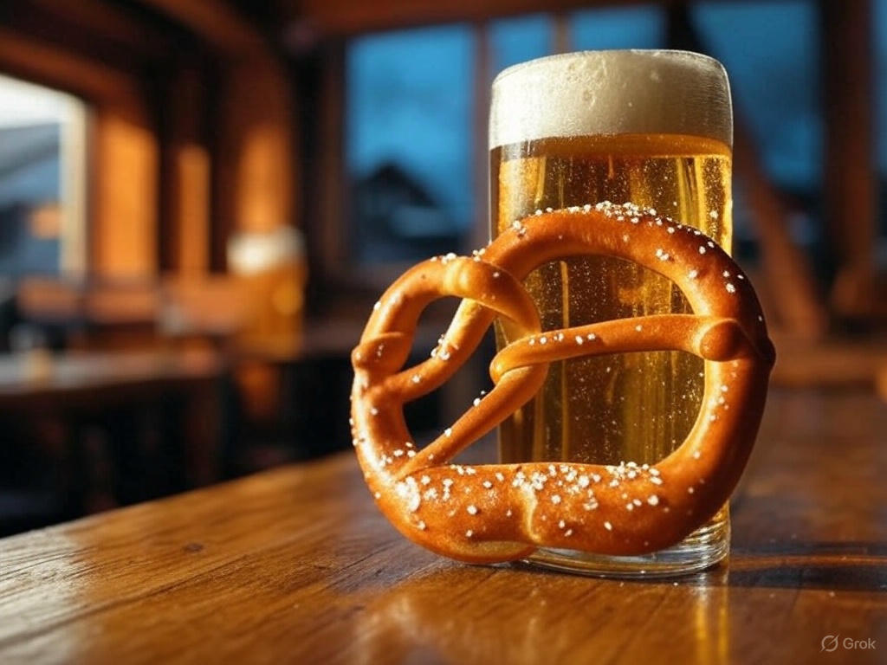
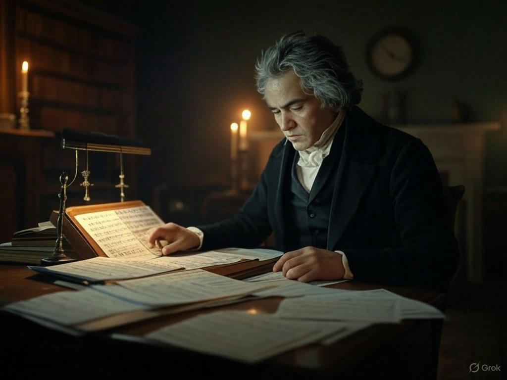
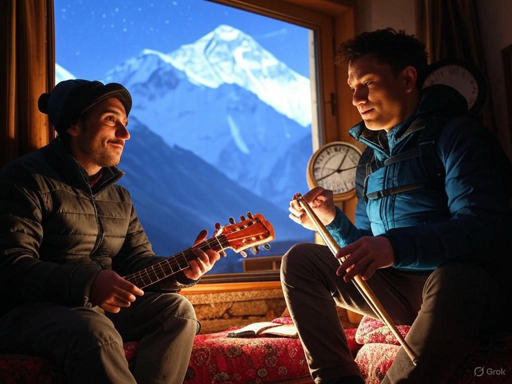

German Culture: An Epic Journey
German culture is a treasure chest overflowing with history, traditions, and surprises that have shaped the world in ways you might not expect. From ancient tribes to a modern powerhouse, Germany’s story is packed with fascinating moments, mouthwatering foods, incredible music, and quirky customs. This guide dives deep into Germany’s past, its vibrant culture, tasty dishes, musical legacy, political evolution, and its unexpected ties with Nepal.
The History of Germany: From Tribes to Today
Germany’s history is a rollercoaster of triumphs, struggles, and rebirths. Here’s the full scoop.
Ancient Times: Germanic Tribes (Before 100 AD)
Before Germany was a country, it was a wild land of Germanic tribes like the Cherusci, Suebi, and Saxons. These folks were tough—farmers, hunters, and warriors who loved freedom. In 9 AD, Arminius, a Germanic chieftain, ambushed three Roman legions in the Teutoburg Forest, stopping Rome’s push north. No fancy cities yet, just scattered tribes speaking early Germanic tongues.
Surprising Fact: Arminius was trained by the Romans before betraying them—talk about a double agent!
Holy Roman Empire (800–1806)
In 800 AD, Charlemagne got crowned Emperor, starting the Holy Roman Empire—a loose collection of German-speaking lands. It wasn’t one tight nation but a patchwork of kingdoms and cities, buzzing with trade, art, and ideas. It lasted over 1,000 years until Napoleon crushed it in 1806.
Interesting Fact: The Empire’s full name was “Holy Roman Empire of the German Nation”—quite a mouthful!
Data: At its peak, it had over 300 tiny states—imagine the chaos!
Prussia and Unification (1815–1871)
After Napoleon’s mess, Prussia—a strong northern state—rose up. Otto von Bismarck, a crafty leader, united Germany in 1871 after beating France in the Franco-Prussian War. The new German Empire was born, with factories booming and an army to match.
Surprising Fact: Bismarck once fought 25 duels as a student and never lost—tough guy!
World Wars and Division (1914–1945)
Germany leapt into World War I (1914–1918), lost, and fell into chaos with the Weimar Republic. Then came Hitler and the Nazis in 1933, sparking World War II (1939–1945). After defeat, Germany split in 1949: West Germany (democratic) and East Germany (communist).
Interesting Fact: During WWII, Germany built the world’s first jet fighter, the Messerschmitt Me 262—too late to win, though.
Data: The Berlin Wall, built in 1961, was 155 kilometers long—dividing families for 28 years.
Reunification and Modern Germany (1990–Today)
The Berlin Wall fell in 1989, and Germany reunited in 1990. Now, it’s Europe’s economic giant, a leader in the EU, and a global voice for peace and green tech.
Surprising Fact: Reunification cost over €2 trillion—Germany rebuilt half a country!
German Culture: Traditions and Everyday Life
German culture is a blend of old-school charm and modern coolness, with surprises around every corner.
Traditions
- Oktoberfest: Started in 1810 for a prince’s wedding, now it’s a Munich mega-party. Over 6 million people drink beer and munch pretzels yearly.
- Surprising Fact: The beer tents serve over 7 million liters of beer—enough to fill 3 Olympic pools!
- 
- Christmas Markets: Since the 14th century, these winter fairs sell Glühwein (mulled wine) and crafts. Dresden’s market is the oldest, from 1434.
- Interesting Fact: Germans invented the Christmas tree—thank them next December!
- Karneval/Fasching: A wild pre-Lent party in places like Cologne, with costumes and parades.
- Data: Cologne’s Karneval draws 1.5 million people—crazy crowds!
- Schultüte: Kids get a giant cone of treats on their first school day—sweet motivation!
Everyday Life
Germans are punctual—5 minutes early is on time. Recycling Kings: They sort trash into 5+ bins—over 60% of waste gets recycled! Bread Obsession: With 3,200 types of bread, it’s a UNESCO cultural treasure.
Surprising Fact: Germans can legally drink beer at 16—earlier than driving!
German Foods: Hearty, Tasty, and Full of Surprises
German cuisine is all about filling your belly with flavor—and some unexpected twists.
Classics
- Bratwurst: Grilled sausages with mustard—over 40 varieties exist!
- Interesting Fact: Nuremberg’s tiny Rostbratwurst are so famous, they’re EU-protected.
- Sauerkraut: Fermented cabbage—good for your gut and great with pork.
- Schnitzel: Breaded meat, fried crispy—Wiener Schnitzel’s actually Austrian, but Germans love it.
- 
- Pretzels: Soft, salty, and twisted—Bavaria’s pride.
- Black Forest Cake: Chocolate, cherries, and cream—named after a forest, not the color.
Regional Gems
- North: Labskaus—a weird mix of corned beef, beets, and potatoes, topped with a fried egg.
- Surprising Fact: Sailors ate it to fight scurvy—those beets helped!
- South: Weißwurst—white sausage with sweet mustard, eaten before noon.
- East: Rinderroulade—beef rolls stuffed with bacon and pickles.
Drinks
- Beer: Over 7,000 brands—Pilsner, Weißbier, you name it.
- Data: Germans drink 104 liters of beer per person yearly—tops in Europe!
- 
- Wine: Riesling’s the star—Germany’s vineyards date back to Roman times.
- Apfelwein: Apple cider from Frankfurt—tart and refreshing.
Surprising Fact: Germans invented gummy bears—Haribo’s from Bonn!
German Music: From Classical to Crazy
Germany’s music history is legendary, with surprises that’ll make you tap your feet.
Classical Masters
- Bach: Baroque king—his Brandenburg Concertos are pure gold.
- Beethoven: Deaf by his late years, still wrote Symphony No. 9.
- Interesting Fact: His “Ode to Joy” is the EU’s anthem!
- Wagner: Opera titan—his Ride of the Valkyries is epic.
- 
Folk Tunes
- Oom-Pah: Brass bands at Oktoberfest—think tubas and accordions.
- Schlager: Cheesy pop hits like Ein Stern by DJ Ötzi—Germans adore it.
Modern Beats
- Kraftwerk: Electronic pioneers—Autobahn (1974) changed music forever.
- Rammstein: Metal with fire shows—Du Hast is a global hit.
- Surprising Fact: They’ve been banned in some places for wild lyrics!
Data: Germany’s music market is worth €2 billion—third globally!
German Politics: Strength and Smarts
Germany’s political path is a comeback story with big impact.
Past to Present
Post-WWII, West Germany rebuilt as a democracy, East went communist. Reunited in 1990, it’s now a federal republic with 16 states. Chancellor Power: Angela Merkel (2005–2021) was called the “world’s most powerful woman.” EU Leader: Germany pumps €370 billion yearly into the EU economy.
Surprising Fact: Germany’s constitution (Grundgesetz) from 1949 is still rocking—no amendments needed for reunification!
Cool Stats
- Data: 83 million people—Europe’s most populous nation.
- Green Goals: Aims for 80% renewable energy by 2050—wind turbines everywhere!
Germany and Nepal: A Hidden Friendship
Germany and Nepal share a cool bond—small but mighty.
Ties
Diplomacy: Started in 1958—Germany’s been aiding Nepal with schools and solar power. Travel: Germans flock to Nepal’s Himalayas—over 20,000 visit yearly. Community: 4,000+ Nepalis in Germany bring momo and Dashain vibes.
Interesting Fact: German climbers helped map Everest in the ‘20s!
Trade and Aid
Nepal exports carpets; Germany sends tech. Data: Germany’s given Nepal €500 million in aid since the ‘60s.
Surprising and Interesting Facts About German Culture
Surprising Facts
- Longest Word: Rindfleischetikettierungsüberwachungsaufgabenübertragungsgesetz (63 letters)—a beef labeling law!
- Toilet Tech: Germans invented the flush toilet in 1775—thanks, Johann!
- Car Pioneers: Karl Benz made the first car in 1885—hello, Mercedes!
- Book Heaven: Frankfurt Book Fair is the world’s oldest, from 1454.
- Zoo Stars: Berlin Zoo has more species (1,500) than anywhere else.
Interesting Facts
- No Speed Limit: Parts of the Autobahn let you zoom—no cap!
- Fairy Tales: The Brothers Grimm (Hansel and Gretel) were German—spooky stuff!
- Clock Crazy: The cuckoo clock came from the Black Forest.
- Bread Law: Bakeries can’t call bread “bread” unless it’s traditional—serious rules!
- Data: 91% of Germans speak German as their first language—super unified!

Links to Explore More
Articles
- German Culture on Expatica – Everyday life details.
- German Food History on Serious Eats – Deep food dive.
- German Music on DW – Classical to modern.
YouTube Channels
- Easy German: Real chats about culture. [Easy German]
- Get Germanized: Fun facts and traditions. [Get Germanized]
- DW Euromaxx: Slick culture vids. [DW Euromaxx]
- Wolle’s World: Travel and culture gems. [Wolle’s World]
Practice Time!
- Speak: Say Ich liebe deutsche Kultur! (I love German culture!) 5 times.
- Eat: Make a mini-pretzel or sausage snack—taste the culture!
- Watch: Pick a DW Euromaxx video and note 3 cool facts.
Wrapping Up
Germany’s culture is a giant, thrilling mix of history, food, music, politics, and wild facts—like inventing gummy bears and having no speed limits! From ancient tribes to Berlin’s buzz, it’s a land of depth and surprises. Nepal’s in the mix too, with trekkers and momo. Check the links, watch the channels, and dive into this amazing world. Auf Wiedersehen und viel Spaß! (Goodbye and have fun!)